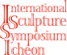

CLONE CODING WEB SITE
경기도 이천에 위치한 이천국제조각심포지엄(ISSI)은 전문 조각가들 중
우수한 작가를 선정하여 25일간 야외 프로그램을 제공하는 사이트 입니다.
#레이아웃연습을 하며 제작 했습니다.
DESIGN CONCEPT
본문
노토산스
가나다라마바사아자차카타파하 가나다라마바사아자차카타파하 Aa Bb Cc Dd Ee Ff Gg Hh Ii Jj Kk Ll Mm Nn Oo Pp Qq Rr Ss Tt Uu Vv Ww Xx Yy Zz영문
Montserrat
Aa Bb Cc Dd Ee Ff Gg Hh Ii Jj Kk Ll Mm Nn Oo Pp Qq Rr Ss Tt Uu Vv Ww Xx Yy Zz Aa Bb Cc Dd Ee Ff Gg Hh Ii Jj Kk Ll Mm Nn Oo Pp Qq Rr Ss Tt Uu Vv Ww Xx Yy Zz주조색
로고
